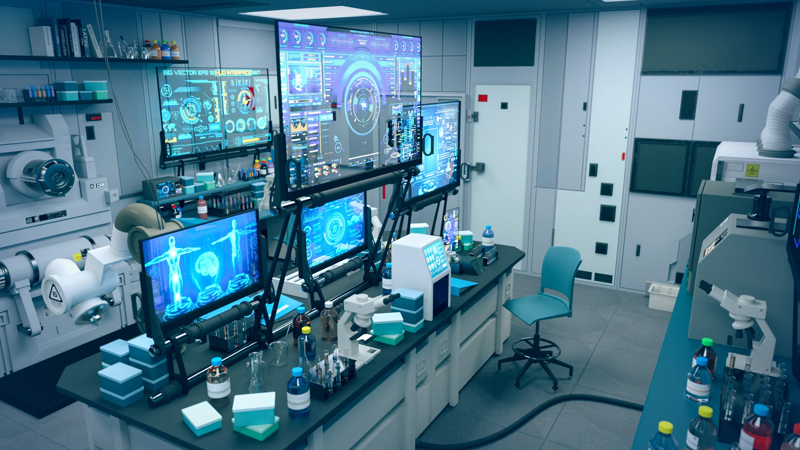

Digital Ecosystem
Technology is an interconnected landscape. While every field focuses on computation, each takes a unique path to solving the challenges of tomorrow.


Computer Science
The Architects of Logic
Focusing on theory, algorithms, and the "how" of computation.
Software Engineering
The Builders of Systems
Applying rigorous engineering to create reliable applications.
Information Systems
The Bridge to Business
Optimizing how organizations use data to make smart decisions.
Information Technology
The Infrastructure
Ensuring hardware, networks, and cloud stay connected.
Select Your Major
⚙️
Software Engineering (SE)
Coding, Design, and Testing
📊
Information Systems (IS)
Database & Business Logic
💻
Computer Science (CS)
Algorithms & Theory
🌐
Information Technology (IT)
Systems & Network Maintenance